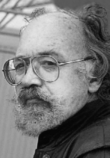
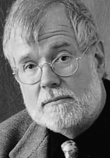
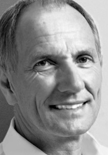
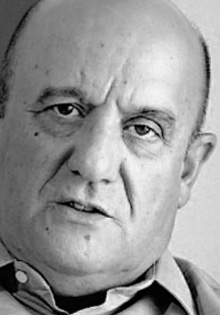
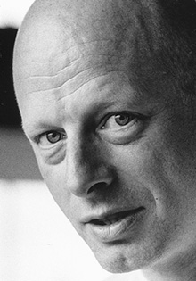
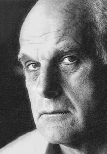
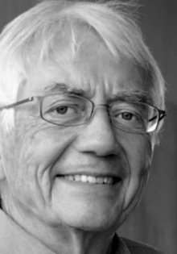
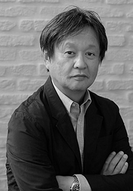

- Gerd A. Müller
- 
- Gerd A. Müller는 1932년에 태어났습니다. 그는 1955-1960년 비스바덴에 위치한 Werkkunstschule에서 공부했습니다.
- Wolfgang Fabian
- 
- Wolfgang Fabian은 1943년에 태어났고 산업 디자인을 공부하기 전 자격을 갖춘 금 세공인이었습니다.
- Andreas Haug
- 
- Andreas Haug는 1946년 하이덴하임에서 태어났습니다. 그는 Daimler Benz 의 상무, 기술 분야에서 수습직원으로 경력을 시작했습니다.
- Franco Clivio
- 
- Franco Clivio는 스위스 Schulen에서 1942년에 태어났습니다. 그는 Erco, FSB, Rodenstock, Siemens와 디자인 작업을 했습니다.
- Hannes Wettstein
- 
- Hannes Wettstein은 1958년에 스위스 Ascona에서 태어났습니다. 그는 회사, 공간, 건축 분야에서 활발하게 활동했습니다.
- Richard Sapper
- 
- 그는 경력을 Mercedes Benz라는 최고의 자리에서 시작했습니다. 동시에 벤츠 300 SL roadster의 차 유리 디자인 작업에도 참여했습니다.
- Knud Holscher
- 
- 덴마크에서 태어난 Rodby는 1930년에 그의 첫 번째 건축 경연대회에서 수상했습니다. 그가 디자인한 건물들은 수많은 상을 받았습니다.
- Naoto Fukasawa
- 
- Naoto Fukasawa가 2003년 47세의 나이로 디자인 사무실을 차렸을 때, 그의 심플하고 재미있는 디자인은 국제적인 성공을 거두었습니다.